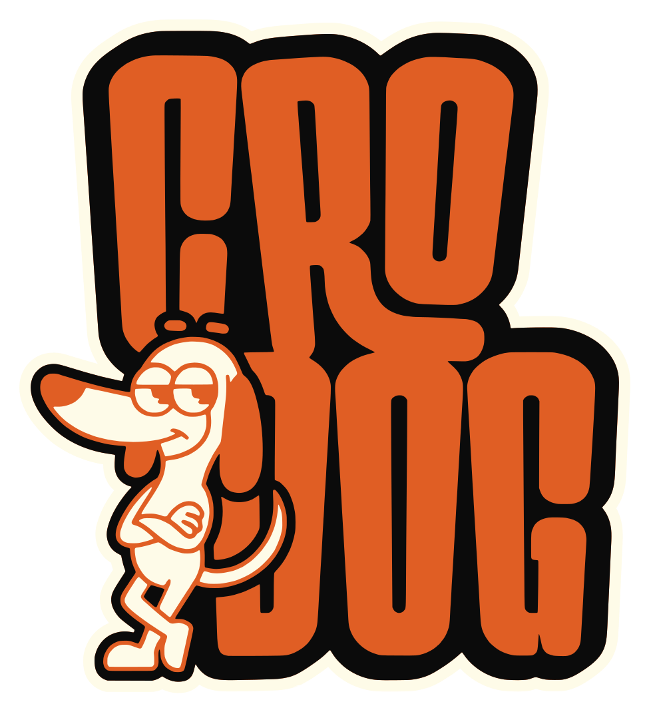
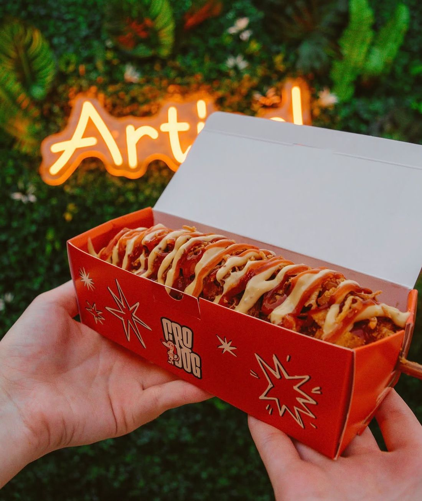
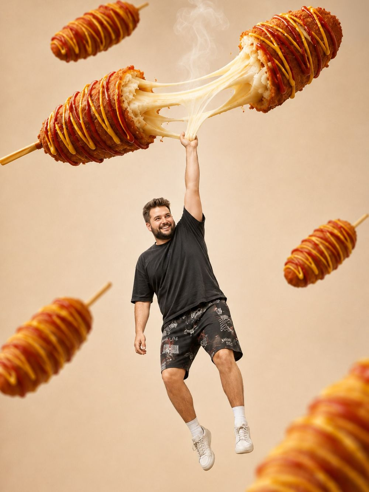
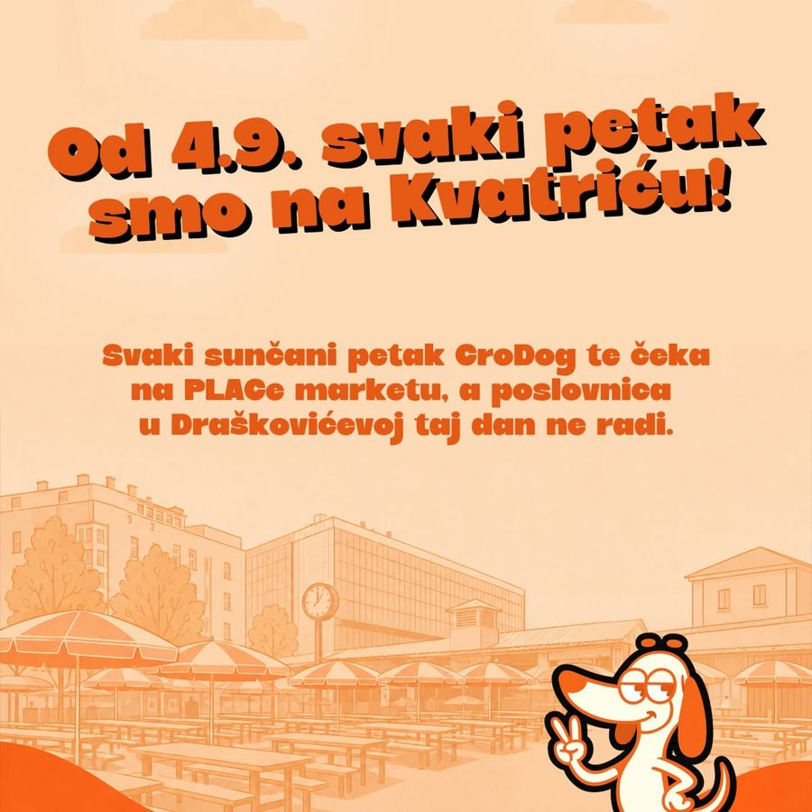

Najprodavanije
Pola sir, pola pileća
Gornja polovica sir, donja pileća hrenovka. Zašto birati kad možeš oboje?

NaručiPrvi corn dog place u Hrvatskoj
Hrenovka, sir ili mozzarella na štapiću, umočeni u korejsko tijesto i uvaljani u panko mrvice – vruće, zlatno i spremno za jesti u hodu. Draškovićeva 5, Zagreb.

Što je CroDog?
Corn dog je američka ulična klasika, a Korejci su ga pretvorili u pravi hit – hrskava vanjština od panko mrvica i krumpira, a unutra hrenovka ili sir koji se razvlači. U siječnju 2026. donijeli smo ga u Draškovićevu – kao prvi corn dog place u Hrvatskoj.

Test razvlačenja
Kako nastaje
Pileća hrenovka, debrecinka, hrenovka sa sirom, mozzarella ili vege – ili pola-pola, kad ne možeš odlučiti.
Umačemo ga u gusto korejsko tijesto koje drži sve na okupu i daje onu mekanu sredinu.
Panko mrvice i krumpir, a za pravi crunch biraš: Doritos nacho ili cornflakes.
Zlatno pržen, preliven umacima i posut hrskavim dodacima. Ravno u kutiju – i u ruke.
„U Draškovićevoj se svaki dan stvara red za jedno jelo.”
Index.hr
„Sočno punjenje, hrskava vanjština i neobična kombinacija nostalgije i potpuno novog okusa.”
Fashion.hr
S ulice

Petkom na placu
Od 4. rujna svaki sunčani petak CroDog te čeka na PLACe marketu na Kvatriću. Taj dan poslovnica u Draškovićevoj ne radi – zato prati naš Instagram da znaš gdje smo.
Prati @crodog_hrLokacija i radno vrijeme
10000 Zagreb · u samom centru grada
Sunčanim petkom smo na Kvatriću, a poslovnica tada ne radi.